Scancode Output Formats¶
Scan results generated by Scancode are available in different formats, to be specified by the following options.
All Scan Output Options¶
- --json FILE
Write scan output as compact JSON to FILE.
- --json-pp FILE
Write scan output as pretty-printed JSON to FILE.
- --json-lines FILE
Write scan output as JSON Lines to FILE.
- --csv FILE
Write scan output as CSV to FILE.
- --html FILE
Write scan output as HTML to FILE.
- --custom-output
Write scan output to FILE formatted with the custom Jinja template file.
Mandatory Sub-option:
--custom-template FILE
- --custom-template FILE
Use this Jinja template FILE as a custom template.
Sub-Option of:
--custom-output- --spdx-rdf FILE
Write scan output as SPDX RDF to FILE.
- --spdx-tv FILE
Write scan output as SPDX Tag/Value to FILE.
- --html-app FILE
Write scan output as a mini HTML application to FILE.
Warning
The html-app feature has been deprecated and you should use Scancode Workbench instead to visualize scan results. The official Repository link. Also refer How to Visualize Scan results.
Note
You can Output Scan Results in two different file formats simultaniously in one Scan. An
example - scancode -clpieu --json-pp output.json --html output.html samples.
Note
All the examples and snippets that follows heas been generated by scanning the samples
folder distributed with scancode-toolkit.
Note
Please note that different for different install methods, scan commands vary.
The basic command to perform a scan, in case of a download and configure installation (on Linux/MacOS) is:
path/to/scancode [OPTIONS] <OUTPUT FORMAT OPTION(s)> <SCAN INPUT>
The basic usage, if Scancode is installed from pip, or in Windows:
scancode [OPTIONS] <OUTPUT FORMAT OPTION(s)> <SCAN INPUT>
For more information on how the Scan Command varies for Various Installation Methods/Operating Systems, refer Commands Variation.
Print to stdout (Terminal)¶
If you want to format the output in JSON and print it at stdout, you can replace the JSON filename
with a “-“, like --json-pp - instead of --json-pp output.json.
The following command will output the scan results in JSON format to stdout (In the Terminal):
./scancode -clpieu --json-pp - samples/
--json FILE¶
Among the ScanCode Output Formats,
jsonis the most important one, and is recommended over others. Scancode Workbench and other applications that use Scancode Result data as input accept only thejsonformat.Note
There isn’t any default output option in Scancode Versions 3.x, unlike 2.x versions (which had
jsonas default).The following code performs a scan on the samples directory, and publishes the results in
jsonformat:scancode -clpieu --json output.json samplesNote
The default
jsonformat prints the whole report without line breaks/spaces/indentations, which can be ugly to look at.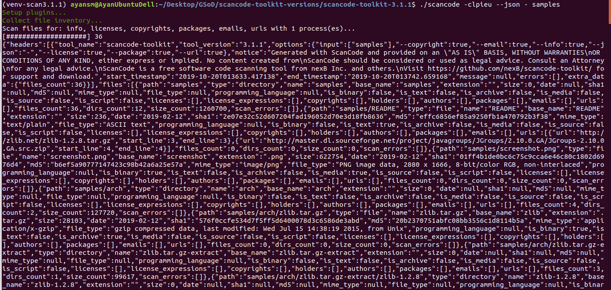The entire JSON file is structured in the following manner:
At first some general information on the scan, what options were used, the number of files etc. And then all the files follow.
{ "headers": [ { "tool_name": "scancode-toolkit", "tool_version": "3.1.1", "options": { "input": [ "samples/" ], "--copyright": true, "--email": true, "--info": true, "--json-pp": "output.json", "--license": true, "--package": true, "--url": true }, "notice": "Generated with ScanCode and provided on an \"AS IS\" BASIS, WITHOUT WARRANTIES\nOR CONDITIONS OF ANY KIND, either express or implied. No content created from\nScanCode should be considered or used as legal advice. Consult an Attorney\nfor any legal advice.\nScanCode is a free software code scanning tool from nexB Inc. and others.\nVisit https://github.com/nexB/scancode-toolkit/ for support and download.", "start_timestamp": "2019-10-19T191117.292858", "end_timestamp": "2019-10-19T191219.743133", "message": null, "errors": [], "extra_data": { "files_count": 36 } } ], "files": [ { "path": "samples", "type": "directory", ... ... ... "scan_errors": [] }, { "path": "samples/README", "type": "file", "name": "README", "base_name": "README", "extension": "", "size": 236, "date": "2019-02-12", "sha1": "2e07e32c52d607204fad196052d70e3d18fb8636", "md5": "effc6856ef85a9250fb1a470792b3f38", "mime_type": "text/plain", "file_type": "ASCII text", "programming_language": null, "is_binary": false, "is_text": true, "is_archive": false, "is_media": false, "is_source": false, "is_script": false, "licenses": [], "license_expressions": [], "copyrights": [], "holders": [], "authors": [], "packages": [], "emails": [], "urls": [], "files_count": 0, "dirs_count": 0, "size_count": 0, "scan_errors": [] }, ... ... ... { "path": "samples/zlib/iostream2/zstream_test.cpp", "type": "file", "name": "zstream_test.cpp", "base_name": "zstream_test", "extension": ".cpp", "size": 711, "date": "2019-02-12", ... ... ... "scan_errors": [] } ] }
--json-pp FILE¶
json-ppstands for JSON Pretty-Print format. In the previous format, i.e. Simplejson, the whole output is printed in one line, which isn’t well suited for getting information if you’re looking at the file itself (or printing at stdout). So this option formats the output results in json but in a properly spaced and indented manner, and is easy to look at.The following code performs a scan on the samples directory, and publishes the results in
json-ppformat:scancode -clpieu --json-pp output.json samplesA sample JSON output for an individual file will look like:
{ "path": "samples/zlib/iostream2/zstream.h", "type": "file", "name": "zstream.h", "base_name": "zstream", "extension": ".h", "size": 9283, "date": "2019-02-12", "sha1": "fca4540d490fff36bb90fd801cf9cd8fc695bb17", "md5": "a980b61c1e8be68d5cdb1236ba6b43e7", "mime_type": "text/x-c++", "file_type": "C++ source, ASCII text", "programming_language": "C++", "is_binary": false, "is_text": true, "is_archive": false, "is_media": false, "is_source": true, "is_script": false, "licenses": [ { "key": "mit-old-style", "score": 100.0, "name": "MIT Old Style", "short_name": "MIT Old Style", "category": "Permissive", "is_exception": false, "owner": "MIT", "homepage_url": "http://fedoraproject.org/wiki/Licensing:MIT#Old_Style", "text_url": "http://fedoraproject.org/wiki/Licensing:MIT#Old_Style", "reference_url": "https://enterprise.dejacode.com/urn/urn:dje:license:mit-old-style", "spdx_license_key": null, "spdx_url": "", "start_line": 9, "end_line": 15, "matched_rule": { "identifier": "mit-old-style_cmr-no_1.RULE", "license_expression": "mit-old-style", "licenses": [ "mit-old-style" ], "is_license_text": true, "is_license_notice": false, "is_license_reference": false, "is_license_tag": false, "matcher": "2-aho", "rule_length": 71, "matched_length": 71, "match_coverage": 100.0, "rule_relevance": 100 } } ], "license_expressions": [ "mit-old-style" ], "copyrights": [ { "value": "Copyright (c) 1997 Christian Michelsen Research AS Advanced Computing", "start_line": 3, "end_line": 5 } ], "holders": [ { "value": "Christian Michelsen Research AS Advanced Computing", "start_line": 3, "end_line": 5 } ], "authors": [], "packages": [], "emails": [], "urls": [ { "url": "http://www.cmr.no/", "start_line": 7, "end_line": 7 } ], "files_count": 0, "dirs_count": 0, "size_count": 0, "scan_errors": [] },This is the recommended Output option for Scancode Toolkit.
--json-lines FILE¶
ScanCode also has a
--json-linesformat option, where each report of a file scanned is formatted in one line.The following code performs a scan on the samples directory, and publishes the results in
json-linesformat:scancode -clpieu --json-lines output.json samplesHere is a sample line from a report generated by the
jsonlinesformat:{"files":[{"path":"samples/zlib/ada",licenses":[],"copyrights":[],"packages":[]}]}The header information is also formatted in one line (i.e. The First Line of the file).
The whole Output file looks like:
{"headers":[{"tool_name":"scancode-toolkit","tool_version":"3.1.1","options":{"input":["samples/"],"--copyright":true,"--email":true,"--info":true,"--json-lines":"output.json","--license":true,"--package":true,"--url":true},"notice":"Generated with ScanCode and provided on an \"AS IS\" BASIS, WITHOUT WARRANTIES\nOR CONDITIONS OF ANY KIND, either express or implied. No content created from\nScanCode should be considered or used as legal advice. Consult an Attorney\nfor any legal advice.\nScanCode is a free software code scanning tool from nexB Inc. and others.\nVisit https://github.com/nexB/scancode-toolkit/ for support and download.","start_timestamp":"2019-10-19T210920.143831","end_timestamp":"2019-10-19T211052.048182","message":null,"errors":[],"extra_data":{"files_count":36}}]} {"files":[{"path":"samples" ... "scan_errors":[]}]} {"files":[{"path":"samples/README", ... "scan_errors":[]}]} {"files":[{"path":"samples/screenshot.png", ... "scan_errors":[]}]} {"files":[{"path":"samples/arch", ... "scan_errors":[]}]} {"files":[{"path":"samples/arch/zlib.tar.gz", ... "scan_errors":[]}]} {"files":[{"path":"samples/arch/zlib.tar.gz-extract", ... "scan_errors":[]}]} {"files":[{"path":"samples/arch/zlib.tar.gz-extract/zlib-1.2.8", ... "scan_errors":[]}]} {"files":[{"path":"samples/arch/zlib.tar.gz-extract/zlib-1.2.8/adler32.c", ... "scan_errors":[]}]} {"files":[{"path":"samples/arch/zlib.tar.gz-extract/zlib-1.2.8/zlib.h", ... "scan_errors":[]}]} {"files":[{"path":"samples/arch/zlib.tar.gz-extract/zlib-1.2.8/zutil.h", ... "scan_errors":[]}]} {"files":[{"path":"samples/JGroups", ... "scan_errors":[]}]} {"files":[{"path":"samples/JGroups/EULA", ... "scan_errors":[]}]} {"files":[{"path":"samples/JGroups/LICENSE", ... "scan_errors":[]}]} {"files":[{"path":"samples/JGroups/licenses", ... "scan_errors":[]}]} {"files":[{"path":"samples/JGroups/licenses/apache-1.1.txt", ... "scan_errors":[]}]} {"files":[{"path":"samples/JGroups/licenses/apache-2.0.txt", ... "scan_errors":[]}]} {"files":[{"path":"samples/JGroups/licenses/bouncycastle.txt", ... "scan_errors":[]}]} {"files":[{"path":"samples/JGroups/licenses/cpl-1.0.txt", ... "scan_errors":[]}]} {"files":[{"path":"samples/JGroups/licenses/lgpl.txt", ... "scan_errors":[]}]} {"files":[{"path":"samples/JGroups/src", ... "scan_errors":[]}]} {"files":[{"path":"samples/JGroups/src/FixedMembershipToken.java", ... "scan_errors":[]}]} {"files":[{"path":"samples/JGroups/src/GuardedBy.java", ... "scan_errors":[]}]} {"files":[{"path":"samples/JGroups/src/ImmutableReference.java", ... "scan_errors":[]}]} {"files":[{"path":"samples/JGroups/src/RATE_LIMITER.java", ... "scan_errors":[]}]} {"files":[{"path":"samples/JGroups/src/RouterStub.java", ... "scan_errors":[]}]} {"files":[{"path":"samples/JGroups/src/RouterStubManager.java", ... "scan_errors":[]}]} {"files":[{"path":"samples/JGroups/src/S3_PING.java", ... "scan_errors":[]}]} {"files":[{"path":"samples/zlib", ... "scan_errors":[]}]} {"files":[{"path":"samples/zlib/adler32.c", ... "scan_errors":[]}]} {"files":[{"path":"samples/zlib/deflate.c", ... "scan_errors":[]}]} {"files":[{"path":"samples/zlib/deflate.h", ... "scan_errors":[]}]} {"files":[{"path":"samples/zlib/zlib.h", ... "scan_errors":[]}]} {"files":[{"path":"samples/zlib/zutil.c", ... "scan_errors":[]}]} {"files":[{"path":"samples/zlib/zutil.h", ... "scan_errors":[]}]} {"files":[{"path":"samples/zlib/ada", ... "scan_errors":[]}]} {"files":[{"path":"samples/zlib/ada/zlib.ads", ... "scan_errors":[]}]} {"files":[{"path":"samples/zlib/dotzlib", ... "scan_errors":[]}]} {"files":[{"path":"samples/zlib/dotzlib/AssemblyInfo.cs", ... "scan_errors":[]}]} {"files":[{"path":"samples/zlib/dotzlib/ChecksumImpl.cs", ... "scan_errors":[]}]} {"files":[{"path":"samples/zlib/dotzlib/LICENSE_1_0.txt", ... "scan_errors":[]}]} {"files":[{"path":"samples/zlib/dotzlib/readme.txt", ... "scan_errors":[]}]} {"files":[{"path":"samples/zlib/gcc_gvmat64" ... "scan_errors":[]}]} {"files":[{"path":"samples/zlib/gcc_gvmat64/gvmat64.S" ... "scan_errors":[]}]} {"files":[{"path":"samples/zlib/infback9", ... "scan_errors":[]}]} {"files":[{"path":"samples/zlib/infback9/infback9.c", ... "scan_errors":[]}]} {"files":[{"path":"samples/zlib/infback9/infback9.h", ... "scan_errors":[]}]} {"files":[{"path":"samples/zlib/iostream2", ... "scan_errors":[]}]} {"files":[{"path":"samples/zlib/iostream2/zstream.h", ... "scan_errors":[]}]} {"files":[{"path":"samples/zlib/iostream2/zstream_test.cpp", ... "scan_errors":[]}]}Note
This
jsonlinesformat also omits other file information like type, name, date, extension, sha1 and md5 hashes, programming language etc.
Comparing Different json Output Formats¶
Default
--jsonOutput: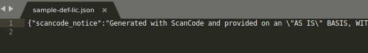
--json-ppOutput: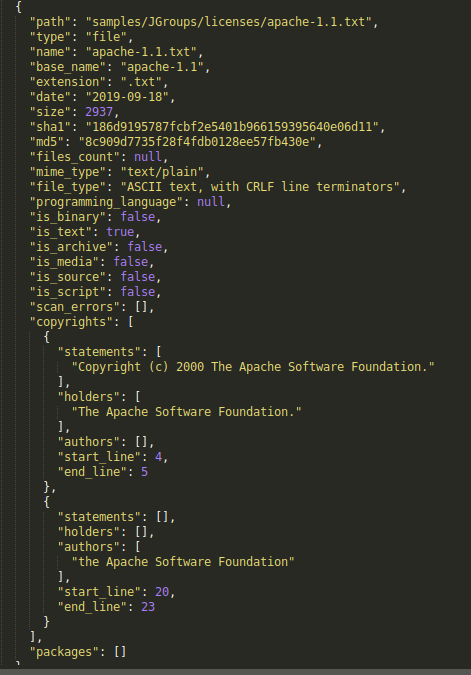
--json-linesOutput: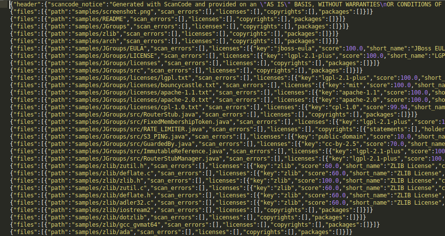
--spdx-rdf FILE¶
SPDX stands for “Software Package and Data Exchange” and is an open standard for communicating software bill of material information (including components, licenses, copyrights, and security references).
The following code performs a scan on the samples directory, and publishes the results in
spdx-rdfformat:scancode -clpieu --spdx-rdf output.spdx samplesLearn more about SPDX specifications here and in this GitHub repository.
Here the file is structured as a dictionary of named properties and classes using W3C’s RDF Technology.
… figure:: data/output_spdx_rdf1.png
--spdx-tv FILE¶
This format is another SPDX variant, with the output file being structured in the following manner:
The following code performs a scan on the samples directory, and publishes the results in
spdx-tvformat:scancode -clpieu --spdx-tv output.spdx samplesA SPDX-TV file starts with:
# Document Information SPDXVersion: SPDX-2.1 DataLicense: CC0-1.0 DocumentComment: <text>Generated with ScanCode and provided on an "AS IS" BASIS, WITHOUT WARRANTIES OR CONDITIONS OF ANY KIND, either express or implied. No content created from ScanCode should be considered or used as legal advice. Consult an Attorney for any legal advice. ScanCode is a free software code scanning tool from nexB Inc. and others. Visit https://github.com/nexB/scancode-toolkit/ for support and download.</text> # Creation Info Creator: Tool: ScanCode 2.2.1 Created: 2019-09-22T21:55:04ZAfter a section titled
#Packages, a list follows.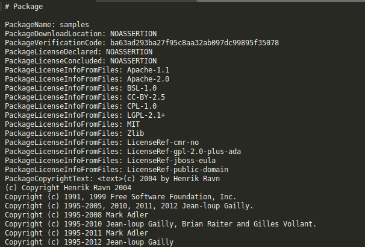Each File information is listed under a
#Filetitle, for each of the files.
FileName
FileChecksum
LicenseConcluded
LicenseInfoInFile
FileCopyrightText
An example goes as follows:
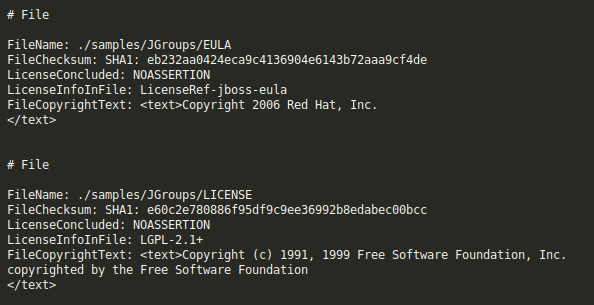After the files section, there’s a section for licenses under a
#Licencestitle, with the following information for each license:
LicenseID
LicenseComment
ExtractedText
Here’s an example:
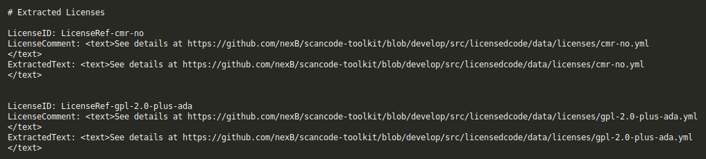
--html FILE¶
ScanCode supports formatting the Output result is a simple
htmlformat, to open with your favorite browser. This helps quick visualization of the detected license/copyright and other main information in the form of tables.The following code performs a scan on the samples directory, and publishes the results in HTML format:
scancode -clpieu --html output.html samplesThe HTML page generated has these following Tables:
Copyright and Licenses Information
File Information
Package Information
Licenses (Links to Dejacode/License Homepage)
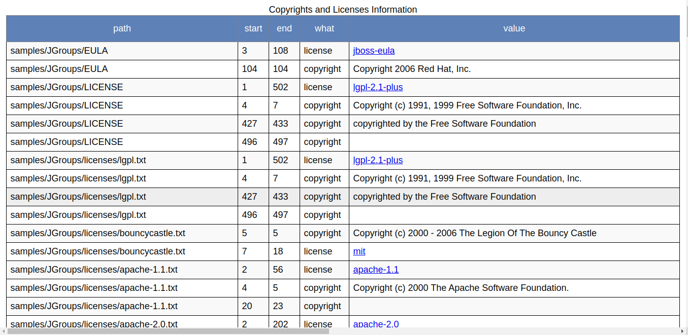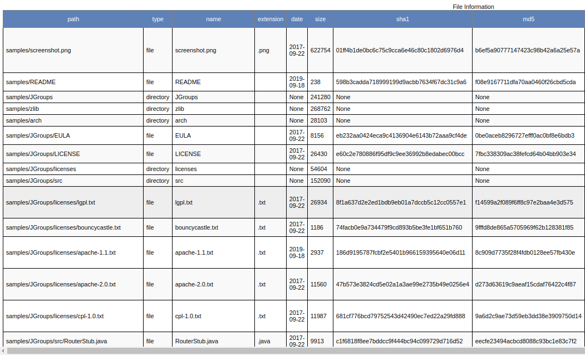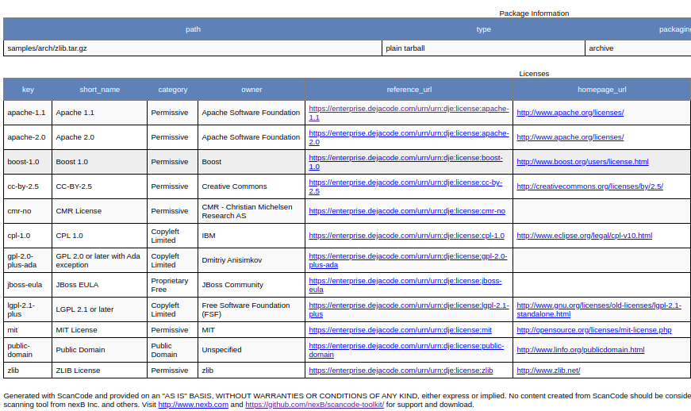
--html-app FILE¶
ScanCode also supports formatting the output in a HTML visualization tool, which is more helpful than the standard HTML format.
Warning
The html-app feature has been deprecated and you should use Scancode Workbench instead to visualize scan results. The official Repository link. Also refer How to Visualize Scan results.
The following code performs a scan on the samples directory, and publishes the results in
html-appformat:scancode -clpieu --csv output.html samplesThe Files scanned are shown in the left sidebar, and the section on the right contains separate tabs for the following:
License Summary
Copyright Summary
Clues
File Details
Packages
Note
The HTML app also contains a Search option to easily find what you are looking for.
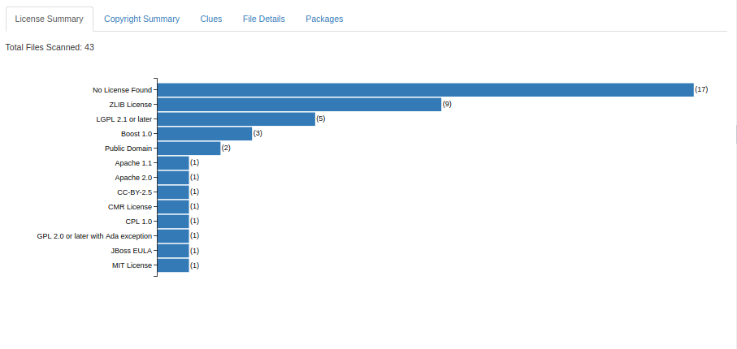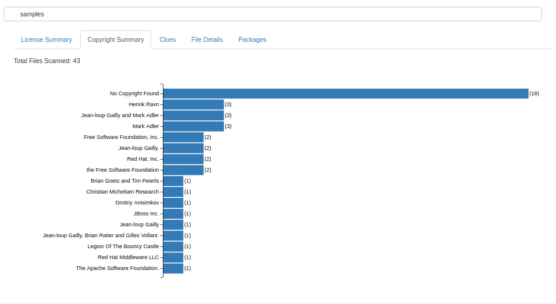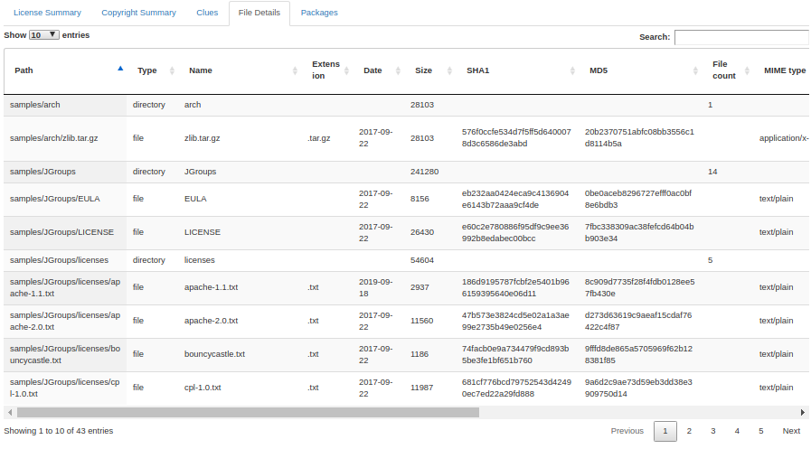
--csv FILE¶
ScanCode can publish results in the useful
.csvformat.The following code performs a scan on the samples directory, and publishes the results in
csvformat:scancode -lpceiu --csv sample.csv samplesThe first line of the csv file contains the headings, and they are:
Resource,
type,
name,
base_name,
extension,
date,
size,
sha1,
md5,
files_count,
mime_type,
file_type,
programming_language,
is_binary,
is_text,
is_archive,
is_media,
is_source,
is_script,
scan_errors,
license__key,
license__score,
license__short_name,
license__category,
license__owner,
license__homepage_url,
license__text_url,
license__reference_url,
license__spdx_license_key,
license__spdx_url,
matched_rule__identifier,
matched_rule__license_choice,
matched_rule__licenses,
copyright,
copyright_holder,
author,
email,
start_line,
end_line,
url,
package__type,
package__name,
package__version,
package__primary_language,
package__summary,
package__description,
package__size,
package__release_date,
package__homepage_url,
package__notes,
package__bug_tracking_url,
package__vcs_repository,
package__copyright_top_level
Each subsequent line represents one element, i.e. can be any of the following:
license
copyright
package
url
So if there’s multiple elements in a file, they are each given an entry with the details mentioned earlier.
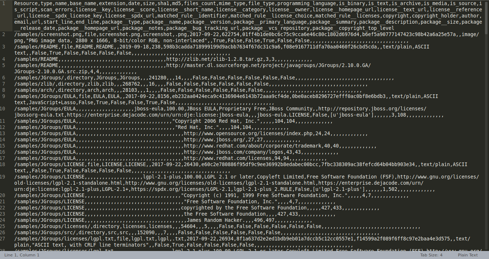
Custom Output Format¶
While the three built-in output formats are convenient for a verity of use-cases, one may wish to create their own output template, using the following arguments:
``--custom-output FILE --custom-template TEMP_FILE``
ScanCode makes this very easy, as it uses the popular Jinja2 template engine. Simply pass the path
to the custom template to the --custom-template argument, or drop it in a folder to
src/scancode/templates directory.
For example, if I wanted a simple CLI output I would create a template2.html with the
particular data I wish to see. In this case, I am only interested in the license and copyright
data for this particular scan.
## template.html:
[
{% if files.license_copyright %}
{% for location, data in files.license_copyright.items() %}
{% for row in data %}
location:"{{ location }}",
{% if row.what == 'copyright' %}copyright:"{{ row.value|escape }}",{% endif %}
{% endfor %}
{% endfor %}
{% endif %}
]
.. note::
File name and extension does not matter for the template file.
Now I can run ScanCode using my newly created template:
$ scancode -clpeui --custom-output output.json --custom-template template.html samples
Scanning files...
[####################################] 46
Scanning done.
Now are results are saved in output.json and we can easily view them with head output.json:
[
location:"samples/JGroups/LICENSE",
copyright:"Copyright (c) 1991, 1999 Free Software Foundation, Inc.",
location:"samples/JGroups/LICENSE",
copyright:"copyrighted by the Free Software Foundation",
]
For a more elaborate template, refer this default template
given with Scancode, to generate HTML output with the --html output format option.
Documentation on Jinja templates.